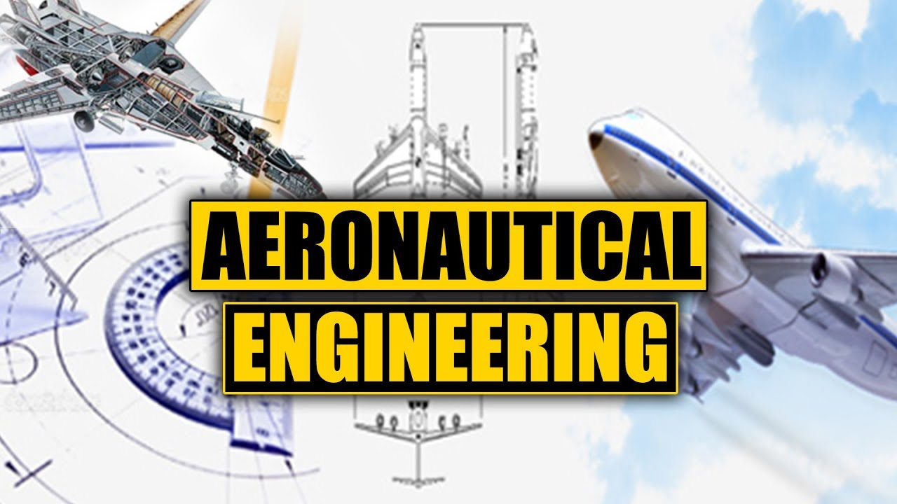

----------------------------------------------------------------------------------------------------------------------------------------------
COURSES AVAILABLE IN COLLEGE
----------------------------------------------------------------------------------------------------------------------------------------------
___________________________________________________________________________________________________________________
UNDER GRADUATION DEGREE IN BTECH:-
___________________________________________________________________________________________________________________
BTECH:-
A Bachelor of Technology (Latin Baccalaureus Technologiae, commonly abbreviated as B.Tech. or BTech; with honours as B.Tech. (Hons.)) is an undergraduate academic degree conferred after the completion of a three-year, a four-year or a five-year program of studies at an accredited university or accredited university-level institution. The degree is conferred in several countries, including the Commonwealth of Nations, Canada, the United States and elsewhere.
___________________________________________________________________________________________________________________
BTECH BRANCHES:-
___________________________________________________________________________________________________________________
1.B.Tech- Aeronautical Engineering.
Aeronautical Engineering is the science involved with the study, design, and manufacture of flight-capable machines, or the techniques of operating aircraft. ... Aerospace engineers are responsible for the research, design and production of aircraft, spacecraft, aerospace equipment, satellites and missiles.
___________________________________________________________________________________________________________________
2.B.Tech-AEROSPACE Engineering.
Aerospace engineering is the primary field of engineering concerned with the design, development, testing, and production of aircraft, spacecraft, and related systems and equipment. ... Aeronautical Engineering focuses on the theory, technology, and practice of flight within the earth's atmosphere.
___________________________________________________________________________________________________________________
3.B.Tech-AUTOMOBILE Engineering.
Automobile Engineering is a branch of engineering that deals with designing, manufacturing and maintenance of Automobiles. The course in Automobile Engineering incorporates a range of sub-disciplines, starting from designing the vehicles to manufacturing components, assembling and testing them for safety.
___________________________________________________________________________________________________________________
4.B.Tech-Chemical Engineering.
Chemical engineering is a certain type of engineering which deals with the study of operation and design of chemical plants as well as methods of improving production. Chemical engineers develop economical commercial processes to convert raw material into useful products.
___________________________________________________________________________________________________________________
5.B.Tech-Civil Engineering.
Civil engineering is a professional engineering discipline that deals with the design, construction, and maintenance of the physical and naturally built environment, including public works such as roads, bridges, canals, dams, airports, sewage systems, pipelines, structural components of buildings, and railways.
___________________________________________________________________________________________________________________
6.B.Tech-Computer Science Engineering.

Computer Science Engineering is a course that deals with design, implementation, and management of information systems of both software & hardware processes. ... Computer Science engineering aids with various disciplines such as electrical and electronics engineering, information technology, software engineering, and more.
___________________________________________________________________________________________________________________
7.B.Tech-Electrical Engineering.

Electrical engineering is an engineering discipline concerned with the study, design and application of equipment, devices and systems which use electricity, electronics, and electromagnetism. ... Electrical engineers work in a very wide range of industries and the skills required are likewise variable.
___________________________________________________________________________________________________________________
8.B.Tech-Environmental Engineering.
Environmental Engineering is the integration of sciences and engineering principles to improve the environment, to provide healthy water, air, and land for human habitation and other organisms and to clean up polluted sites. ... They are involved in work concerned with pollution control and waste management.
___________________________________________________________________________________________________________________
9.B.Tech-Mechanical Engineering.
Mechanical engineering is the study, design, development, construction, and testing of mechanical and thermal sensors and devices, including tools, engines, and machines. ... Mechanical engineers work mostly in engineering services, research and development, and manufacturing.
___________________________________________________________________________________________________________________
10.B.Tech-COMPUTER Engineering.
Computer engineering is a field that integrates electrical engineering and computer science. Computer engineers build devices, design computer networks and develop new technologies. ... As more and more electronic devices become embedded in daily life, the need for computer engineers will rise.
___________________________________________________________________________________________________________________
11.B.Tech-INFORMATION TECHNOLOGY.

Information technology is building communications networks for a company, safeguarding data and information, creating and administering databases, helping employees troubleshoot problems with their computers or mobile devices, or doing a range of other work to ensure the efficiency and security of business information ..
___________________________________________________________________________________________________________________
12.B.Tech-Petroleum Engineering
Petroleum engineering is a field of engineering concerned with the activities related to the production of Hydrocarbons, which can be either crude oil or natural gas. ... Recruitment to the industry has historically been from the disciplines of physics, mechanical engineering, chemical engineering and mining engineering.
___________________________________________________________________________________________________________________
13.B.Tech- Robotics Engineering

Robotics engineering is a field of engineering which centers on building machines that replicate human actions. A robotics engineer creates these applications or autonomous machines (aka robots) for industries such as mining, manufacturing, automotive, services and more.
___________________________________________________________________________________________________________________
14.B.Tech-Telecommunications Engineering

Telecommunications Engineering is an engineering discipline centered on electrical and computer engineering which seeks to support and enhance telecommunication systems.The work ranges from basic circuit design to strategic mass developments. A telecommunication engineer is responsible for designing and overseeing the installation of telecommunications equipment and facilities, such as complex electronic switching systems, and other plain old telephone service facilities, optical fiber cabling, IP networks, and microwave transmission systems. Telecommunications engineering also overlaps with broadcast engineering.
___________________________________________________________________________________________________________________
15.B.Tech-Tool engineering
Tool engineering is a subcategory of industrial engineering which involves tool and machine manufacturing to produce products within limited time and with limited capital, labour and materials. ... The scope of tool engineering is vast in India and other parts of the world.